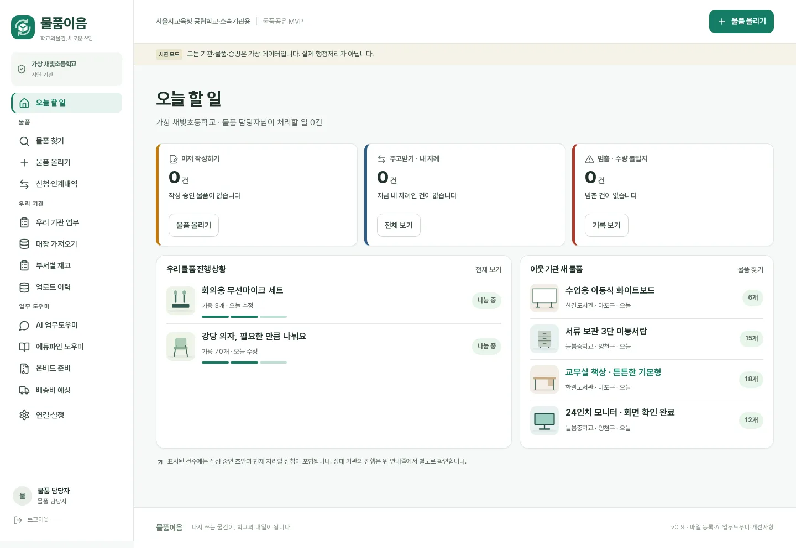
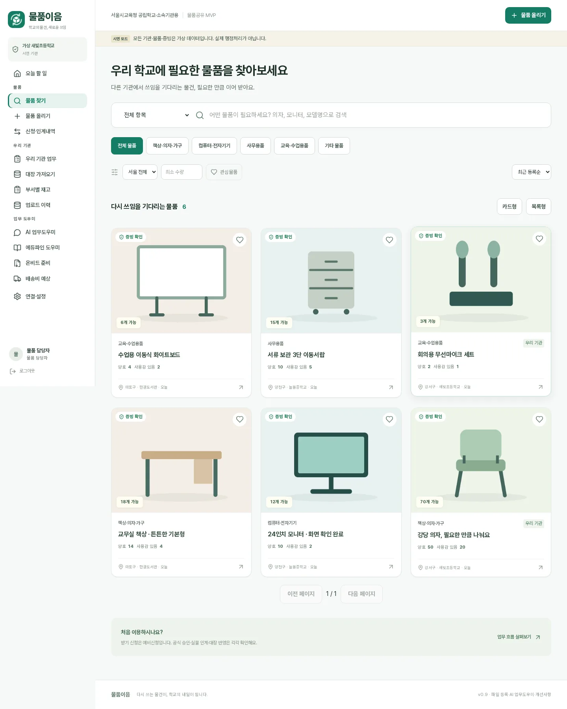
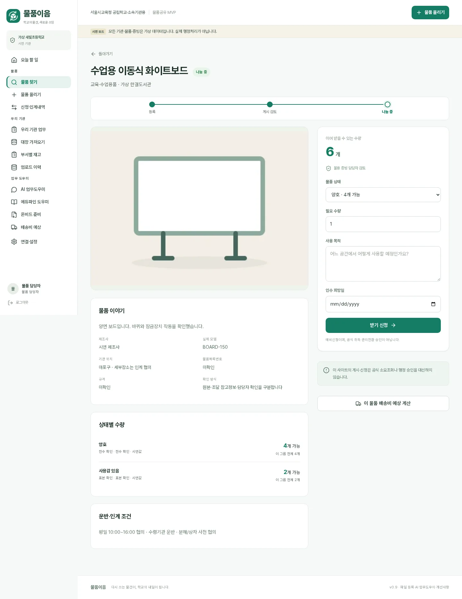
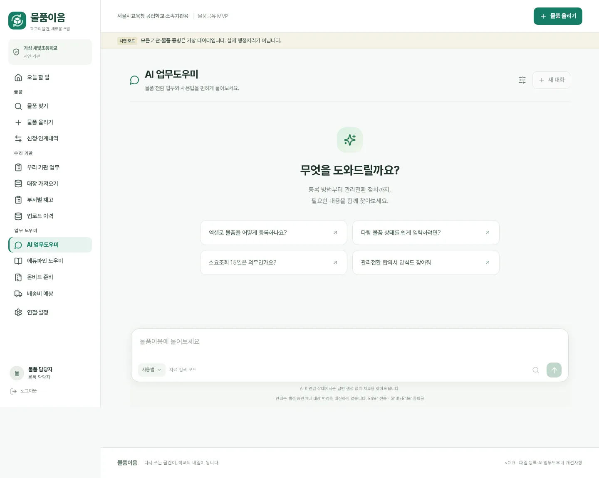
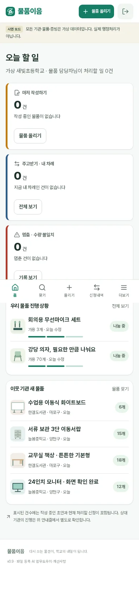
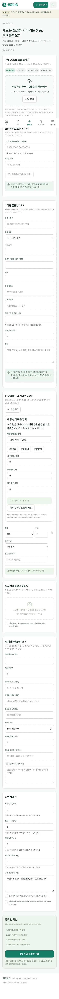

01. 오늘 할 일 — 데스크톱
업무 건수·진행 상황·이웃 기관 등록물품을 한 화면에서 확인합니다.

02. 물품 찾기
검색 및 물품 카드 가독성을 높였습니다.

03. 물품 상세
등록·게시 진행 표시와 현물정보, 신청 동선을 분리합니다.

04. AI 업무도우미
일반 대화형 UI를 유지하고 참고자료는 눌렀을 때만 펼칩니다.

05. 모바일 홈
하단 홈 탭과 할 일 카드

06. 모바일 등록
기존 OZD·엑셀 업로드 유지
